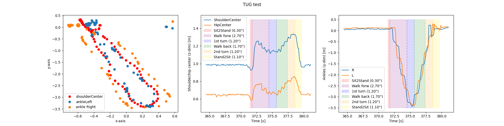

ETAPAS- Use Case2
TUG report through R1 platform
This report is a result of the Use Case 2 in ETAPAS European project. The Use Case focuses on robot-mediated rehabilitation applied in the context of high intensity and repetitive therapy based on the TUG (Timed Up and Go) exercise.
The autonomous platform will be evaluated in terms of:
- correspondence between traditional TUG test with data acquired by the therapists by mean of a stopwatch and data acquired by R1
- correspondence between traditional TUG test with data acquired by commercial IMU and data acquired by R1
- correspondence between kinematic data acquired by commercial IMU and by R1 during TUG
- perception of use of R1 robot for TUG test, both from therapists and from healthy subjects participating in this trial, in terms of usability, acceptance and perceived usefulness through questionnaires.
***********************************************************************************************************************************
| Subject ID: |
{{subject_id}} |
| # trial: |
{{num_trial}} |
| Date: |
{{date}} |
***********************************************************************************************************************************
Full TUG metrics:
| # Steps: |
{{full_steps}} |
| Walking time: |
{{full_walking_time}} s |
| TUG time: |
{{full_TUG_time}} s |
| Mean step length: |
{{mean_step_length}} m |
| Mean step width: |
{{mean_step_width}} m |
| Frequency: |
{{full_frequency}} steps/s |
| Velocity: |
{{full_speed}} m/s |
| Acceleration: |
{{full_acceleration}} m/s^2 |
| Velocity in z-axis: |
{{full_speed_z}} m/s |
| Acceleration in z-axis: |
{{full_acceleration_z}} m/s^2 |
|
 |
|
***********************************************************************************************************************************
In the following tables, a detailed analysis of each TUG phase is provided.
Standing phase:
| Execution time: |
{{standing_time}} s |
| Velocity in z-axis: |
{{standing_speed_z}} m/s |
| Acceleration in z-axis: |
{{standing_acceleration_z}} m/s^2 |
|
Sitting phase:
| Execution time: |
{{sitting_time}} s |
| Velocity in z-axis: |
{{sitting_speed_z}} m/s |
| Acceleration in z-axis: |
{{sitting_acceleration_z}} m/s^2 |
|
Walking forward phase:
| # Steps: |
{{walk_f_steps}} |
| Execution time: |
{{walk_f_time}} s |
| Frequency: |
{{walk_f_frequency}} steps/s |
| Velocity: |
{{walk_f_speed}} m/s |
| Acceleration: |
{{walk_f_acceleration}} m/s^2 |
| Velocity in z-axis: |
{{walk_f_speed_z}} m/s |
| Acceleration in z-axis: |
{{walk_f_acceleration_z}} m/s^2 |
|
Walking backward phase:
| # Steps: |
{{walk_b_steps}} |
| Execution time: |
{{walk_b_time}} s |
| Frequency: |
{{walk_b_frequency}} steps/s |
| Velocity: |
{{walk_b_speed}} m/s |
| Acceleration: |
{{walk_b_acceleration}} m/s^2 |
| Velocity in z-axis: |
{{walk_b_speed_z}} m/s |
| Acceleration in z-axis: |
{{walk_b_acceleration_z}} m/s^2 |
|
Turning-1 phase:
| # Steps: |
{{turn1_steps}} |
| Execution time: |
{{turn1_time}} s |
| Frequency: |
{{turn1_frequency}} steps/s |
| Velocity: |
{{turn1_speed}} m/s |
| Acceleration: |
{{turn1_acceleration}} m/s^2 |
| Velocity in z-axis: |
{{turn1_speed_z}} m/s |
| Acceleration in z-axis: |
{{turn1_acceleration_z}} m/s^2 |
|
Turning-2 phase:
| # Steps: |
{{turn2_steps}} |
| Execution time: |
{{turn2_time}} s |
| Frequency: |
{{turn2_frequency}} steps/s |
| Velocity: |
{{turn2_speed}} m/s |
| Acceleration: |
{{turn2_acceleration}} m/s^2 |
| Velocity in z-axis: |
{{turn2_speed_z}} m/s |
| Acceleration in z-axis: |
{{turn2_acceleration_z}} m/s^2 |
|